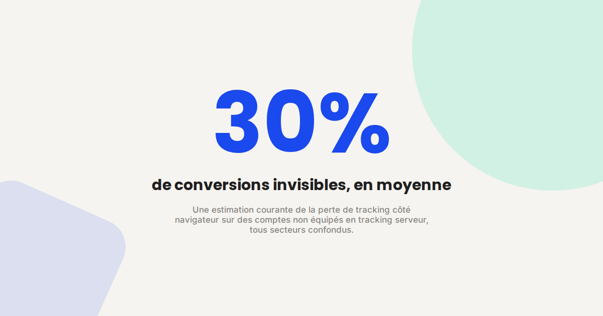
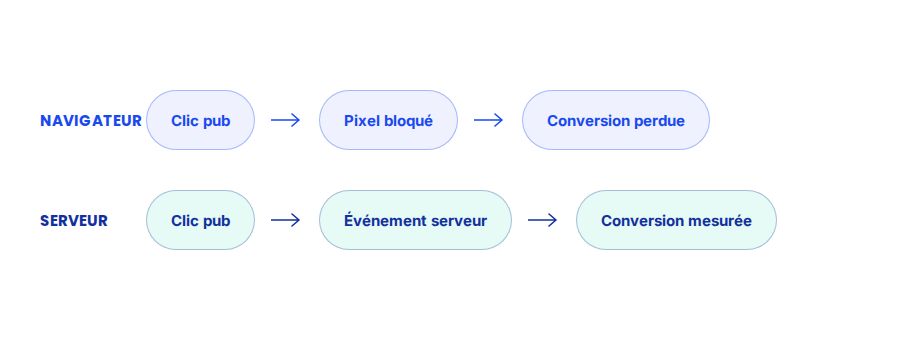

Server-side tracking : pourquoi la Conversion API n'est plus optionnelle
Entre les bloqueurs de publicité, l'ITP de Safari et le blocage progressif des cookies tiers, une part croissante de vos conversions n'est tout simplement plus vue par vos pixels. Le tracking côté serveur (Conversion API / Server-Side Tagging) n'est plus un sujet de grand compte : c'est devenu une question de fiabilité des chiffres, point.

Sur la plupart des comptes que j'audite, la première anomalie que je trouve n'est pas dans la stratégie d'enchères — elle est dans les données elles-mêmes. Le nombre de conversions rapporté par Google Ads ou Meta Ads ne correspond tout simplement plus à la réalité du CRM, parfois avec un écart de 20 à 40 %. La cause la plus fréquente : un tracking qui repose entièrement sur le navigateur du visiteur.
Ce qui ne change pas
La Conversion API ne remplace pas le tracking navigateur classique (pixel Meta, tag Google Ads) — elle vient en complément, en doublon volontaire. Les deux méthodes envoient les mêmes événements, avec un identifiant de déduplication, pour que la plateforme publicitaire ne compte pas deux fois la même conversion. L'objectif reste le même qu'avant : donner à l'algorithme d'enchères les signaux les plus complets et les plus fiables possible.
Ce qui change vraiment
- La source de vérité se déplace du navigateur vers votre serveur. Au lieu de dépendre d'un script JavaScript qui peut être bloqué, ralenti ou simplement absent (navigation privée, ad-blocker), l'événement de conversion est envoyé directement depuis votre backend ou votre CRM vers la plateforme publicitaire.
- La fenêtre d'attribution s'allonge. Une conversion qui a lieu 10 jours après le clic (cycle de vente long, devis signé plus tard) peut être remontée après coup via l'API, alors qu'un pixel navigateur classique la manquerait si le cookie a expiré ou été supprimé entre-temps.
- La qualité prime sur le volume. Les plateformes publicitaires (Meta en particulier, avec son Event Match Quality) notent la qualité des données envoyées côté serveur : plus vous transmettez de paramètres de correspondance (email haché, téléphone, IP), plus l'algorithme d'enchères fait confiance au signal.
- La mise en place devient un sujet technique, pas seulement marketing. Contrairement à un pixel qu'on colle en quelques minutes, la Conversion API demande une intégration côté serveur — directement ou via un Server-Side Tag Manager — ce qui implique une coordination avec la partie technique.

Un exemple qui illustre bien la différence
Sur un client e-commerce que j'accompagne, le passage à la Conversion API Meta a fait remonter 22 % de conversions supplémentaires en quatre semaines — pas de nouvelles ventes, les mêmes ventes, simplement mieux mesurées. Conséquence directe : l'algorithme d'enchères, mieux nourri, a réduit le coût par acquisition de près de 15 % sur le mois suivant, sans qu'aucun paramètre de campagne n'ait changé.
Ce qu'il faut faire concrètement
- Commencez par un Server-Side Google Tag Manager si vous utilisez déjà GTM côté client : c'est la porte d'entrée la plus simple pour router les événements vers un serveur intermédiaire (Cloud Run, container GTM serveur) avant de les renvoyer aux plateformes.
- Priorisez les événements de conversion à forte valeur (achat, lead qualifié) avant les événements intermédiaires (vue de page, ajout au panier) — c'est là que l'écart de mesure coûte le plus cher.
- Vérifiez la déduplication avec l'outil de diagnostic de la plateforme (Meta Events Manager, Google Tag Assistant) pour vous assurer qu'une même conversion n'est pas comptée deux fois entre le pixel et l'API.
- Ne négligez pas le consentement : le tracking côté serveur ne dispense pas du recueil du consentement RGPD — il doit rester conditionné exactement comme le tracking navigateur.
FAQ
La Conversion API remplace-t-elle le pixel classique ?
Non, elle vient en complément. Les deux envoient les mêmes événements avec un identifiant de déduplication, pour maximiser la couverture sans compter deux fois la même conversion.
Faut-il un développeur pour mettre en place le tracking côté serveur ?
Une intégration basique via un Server-Side Tag Manager est accessible sans développement lourd. Une intégration poussée (envoi direct depuis le backend, paramètres de correspondance avancés) demande une coordination avec la partie technique.
Le tracking côté serveur pose-t-il un problème RGPD ?
Non en soi, mais il doit rester soumis au même recueil de consentement que le tracking navigateur : aucune donnée ne doit être envoyée avant que le visiteur ait accepté les cookies de mesure.
Vos chiffres de conversion vous semblent sous-évalués ?
Pour aller plus loin, voir la page Conversion API, la page Analytics, et la page Consultant GA4.
Pour continuer sur ce sujet.